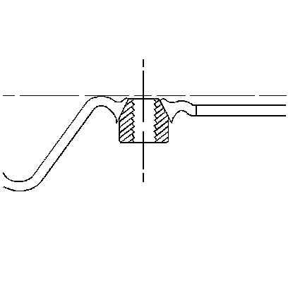

Wheel Mounting Surface Check
Wheel Mounting Surface Check
Replace any wheels that are bent or dented, or have excessive lateral or radial runout. Wheels with runout greater than specified may cause objectionable vibrations.
Wheel Mounting Surface Check:
1. Thoroughly clean the wheel mounting surface with a clean shop towel and denatured alcohol, or equivalent.
2. Use a straight edge 203-229 mm (8-9 in) long. Place the straight edge on the wheel inboard mounting surface. Try to rock the straight edge up and down within the mounting surface.
3. For aluminum flat-mount wheels, repeat the procedure in step 2 on at least 3-4 different positions on the inboard mounting surface.
If you can rock the straight edge, the mounting surface is bent and you must replace the wheel.
4. Inspect the mounting wheel/nut holes for damage caused from over-torquing the wheel/nuts. Inspect for collapsed wheel/nut bosses. Inspect for cracked wheel bosses.
5. For steel wheels, repeat the procedure in step 2 on at least 3-4 different positions on the inboard mounting surface.
^ The outer mounting ring is designed to be raised slightly above the inner mounting ring.
^ If you can rock the straight edge, the mounting surface is bent and you must replace the wheel.

6. Inspect the mounting wheel/nut holes for damage caused from over-torquing the wheel/nuts. Inspect for collapsed wheel/nut bosses. Inspect for cracked wheel bosses.
Notice: The use of non-GM original equipment wheels may cause:
^ Damage to the wheel bearing, the wheel fasteners and the wheel
^ Tire damage caused by the modified clearance to the adjacent vehicle components
^ Adverse vehicle steering stability caused by the modified scrub radius
^ Damage to the vehicle caused by the modified ground clearance
^ Speedometer and odometer inaccuracy
Important:
^ Replacement wheels must be equivalent to the original equipment wheels in the following ways:
- The load capacity
- The wheel diameter
- The rim width
- The wheel offset
- The mounting configuration
^ A wheel of the incorrect size or type may affect the following conditions:
- Wheel and hub-bearing life
- Brake cooling
- Speedometer/odometer calibration
- Vehicle ground clearance
- Tire clearance to the body and the chassis
Replace the wheel if the wheel is bent.
7. Replace the wheel if the wheel/nut boss area is cracked.
Identify steel wheels with a 2 or 3-letter code stamped into the rim near the valve stem. Aluminum wheels have the code, the part number, and the manufacturer identification cast into the back side of the wheel.